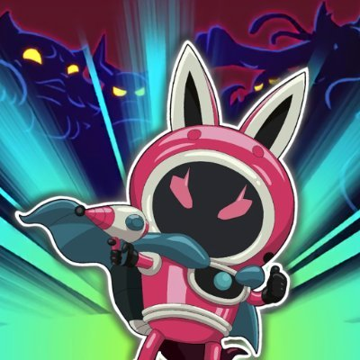
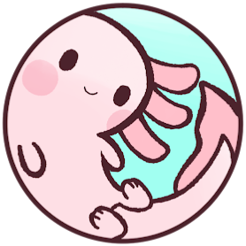
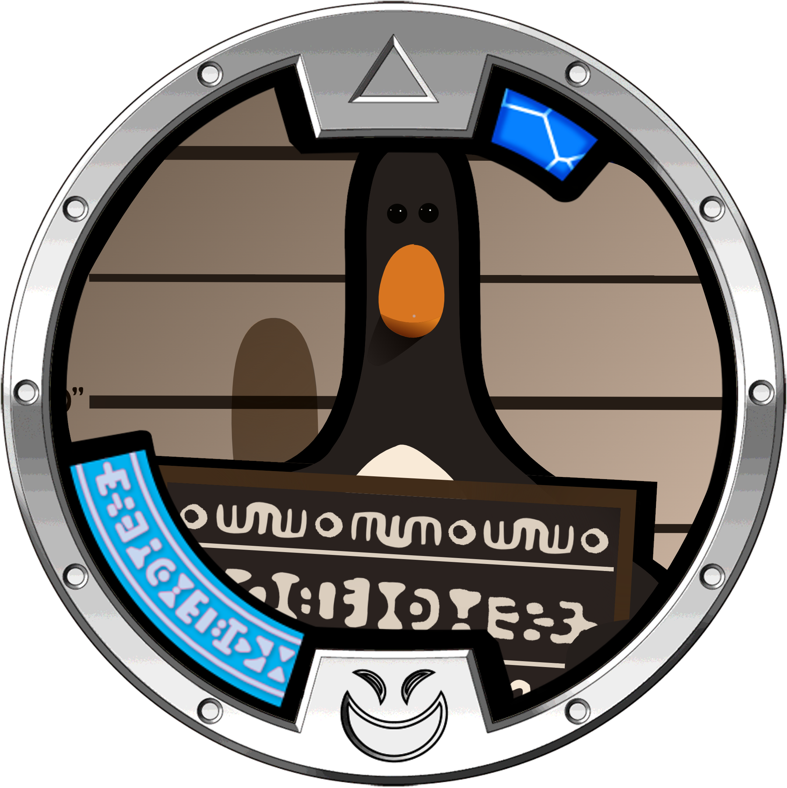
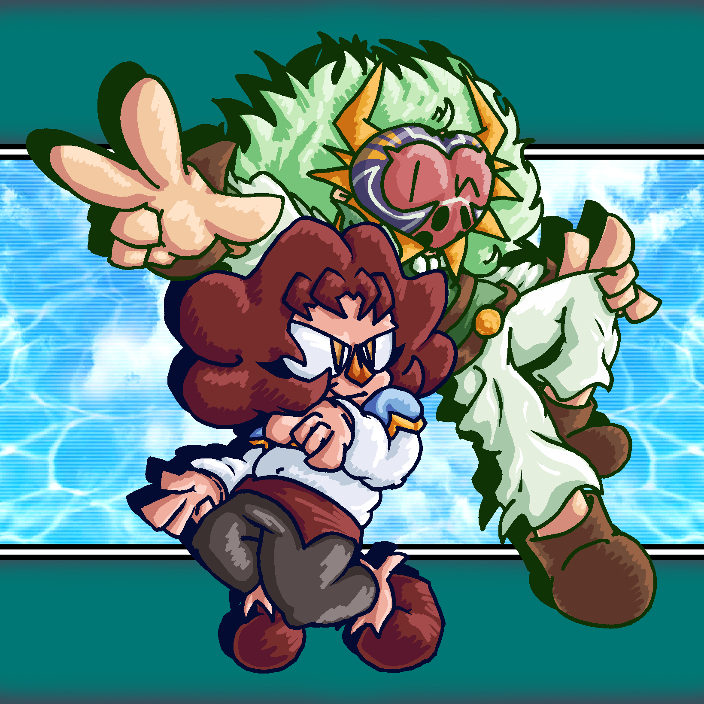
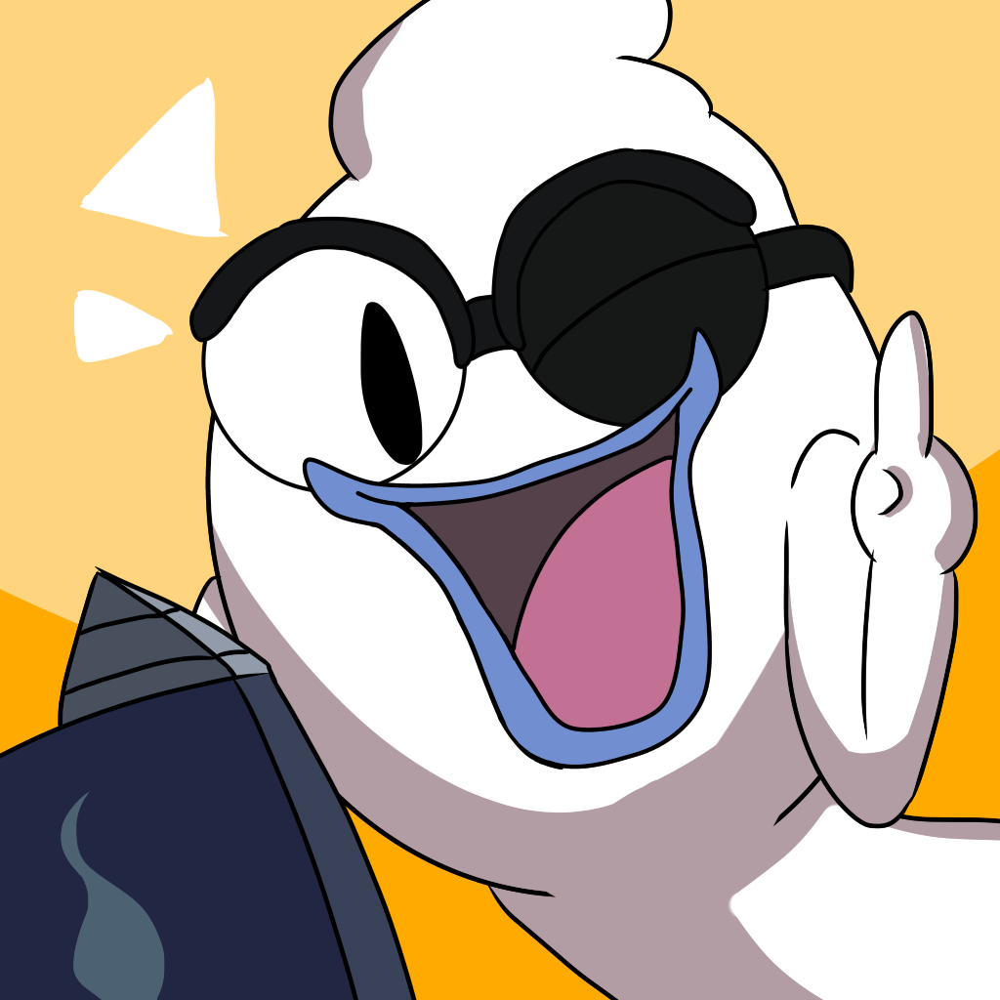
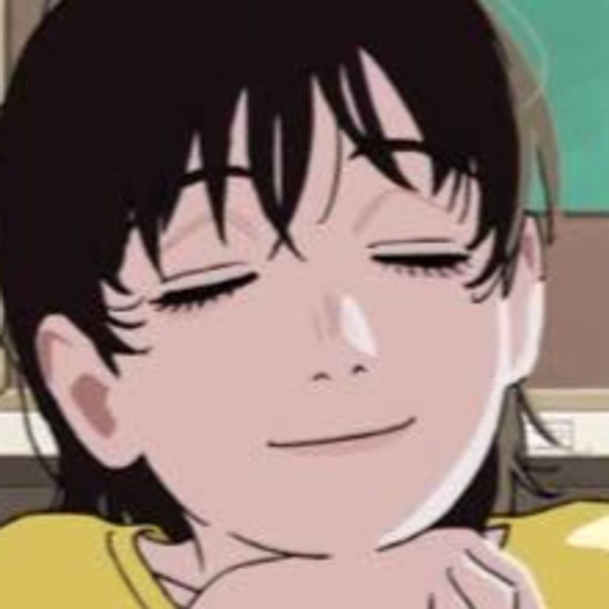
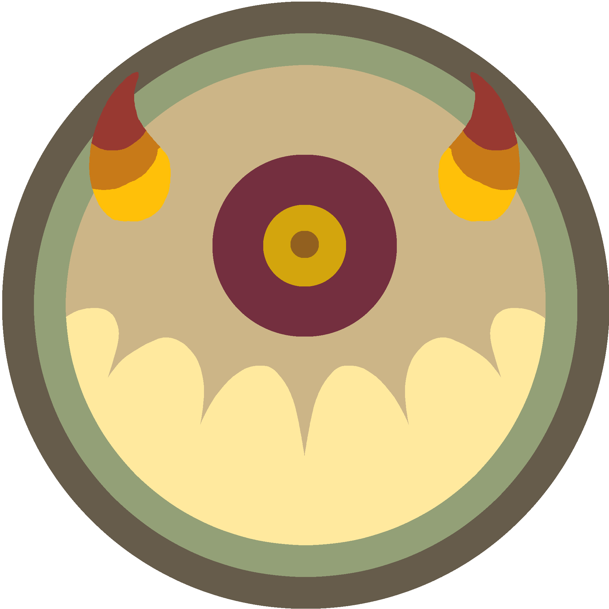
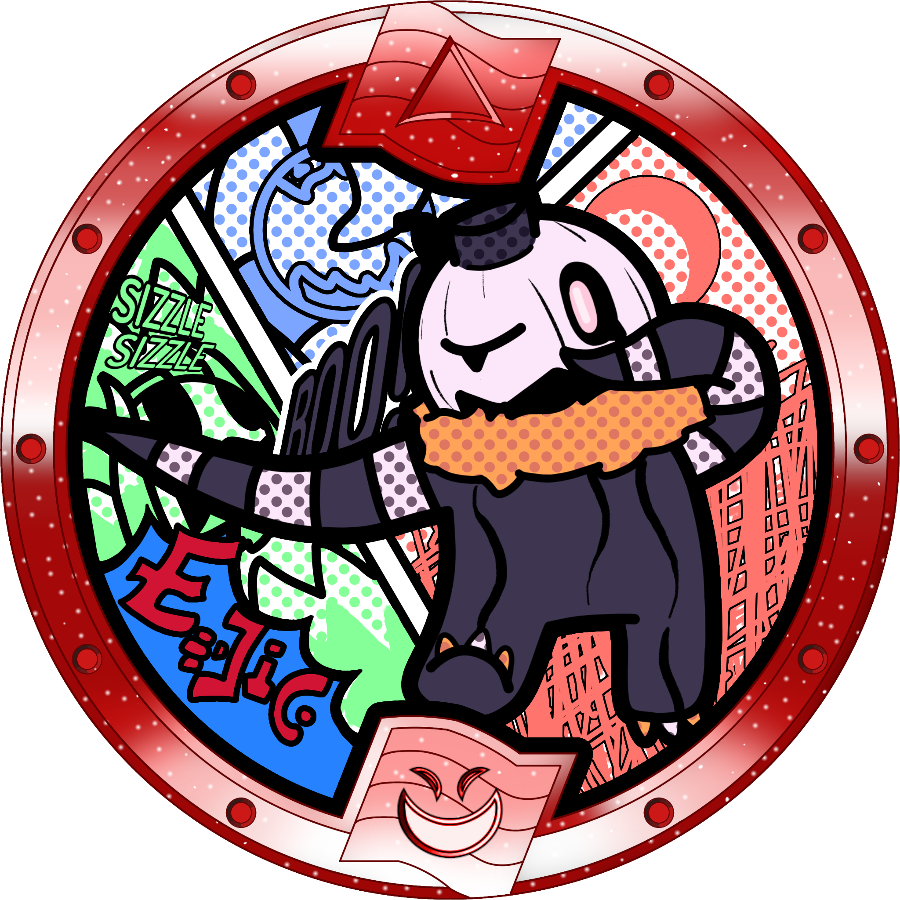

Younes
Creator of the mod. Responsible for implementing all changes and reworking several of the
Yo-kai, as well as directing the project as a whole. Also a general madlad!
Creator and director of the mod. Implements all changes.
![J4's profile picture. It's a very beatiful photograph of a chestnut-fronted macaw, a species of parrot, cropped to only show the bird's face. The bird has green plumage and a black beak, and the skin around its eyes is white. The photo is stunningly beautiful, showing the bird coated in amber golden light from the early hours of the morning in the Amazon jungle. I'm totally not writing all of this to boost my own ego, but you should totally go check out my other very cool website over at https://jbirding.com - J4.](./pfps/J4PFP.png)
J4
Resident Blasters nerd who knows way too much about what's good in this game. Designer of
several items and Yo-kai kits. I also made this site!
Balancer and Yo-kai and equipment designer. I also made this site!

A. Fren
Longtime Blasters fanatic. Designs Yo-kai and equipment, writes, and generally just helps
with creative concepts.
Moveset and equipment designer, helps with creative concepts.

Stitches
Talented artist who has drawn promotional art pieces and several Yo-kai medals used in the
mod.

Komabassador
All around Yo-kai Watch fan and collector who runs the Blasters++ Twitter & Bluesky
accounts, and helps with creative concepts for the mod every now and then!
Runs the Blasters++ Twitter & Bluesky accounts and helps with creative concepts.

Memelord
"i make a the models and a the animations and i make a the j4 say 'dude chill out'"
—memelord
—memelord
Modeler and animator for new and reworked Yo-kai.

Whisperito
Professional Yo-kai Butler since 1997. Admin of the Blasters++ Discord server who set up
most of it. States "[they] like to eat rocks sometimes".
Admin of the Blasters++ Discord server who set up most of it.

Light
YKW4 modder and creator of the English YKW4 fan translation. Translates descriptions from
Japanese into English.
Creator of the English YKW4 fan translation. Translates descriptions from Japanese.

Orochi
Just a big and ignoble individual who does nothing but draw. He made a lot of medals for the mod.
Talented artist who has drawn a lot of the medals you see in the mod.

UnderScore
Creative Director who also made some assets for the mod.
"I'm happy to be working on B++. Working with the team what makes it fun for me."
"I'm happy to be working on B++. Working with the team what makes it fun for me."
Comes up with creative concepts and writes text for the mod.
Argo
Handles mod's changelog and helps gather information.
Frost Shogunyan
Talented artist who has drawn art and Yo-kai medals for mod.